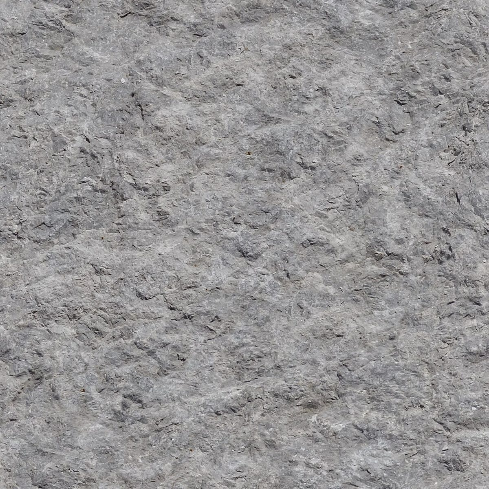

20′ 前半
店のこと
お店について確認できているのは、所在地とInstagramのアカウントだけです。
このページの「連想」の部分は、制作側が考えて書いたものです。お店の実際の様子・考え・メニューとは関係がありません。
確認できていること
- 店名は「PEA BERRY」、業種はカフェ
- 所在地は長崎県平戸市田平町山内免３４６−１(〒859-4825)
- Instagramのアカウントは @peaberry_hirado
- 電話番号はなし。連絡はInstagramから
- 営業時間・定休日・メニュー・価格・ご予約・駐車場は準備中

制作側の連想
試合の前半、まだ様子を見る時間
屋号の由来は分かりません。制作側は、前半20分ごろの「まだ様子を見ている時間」を、このページに重ねました。お店のことはまだ少ししか分かっていないので、分かったことから順に書き足していく作りです。
